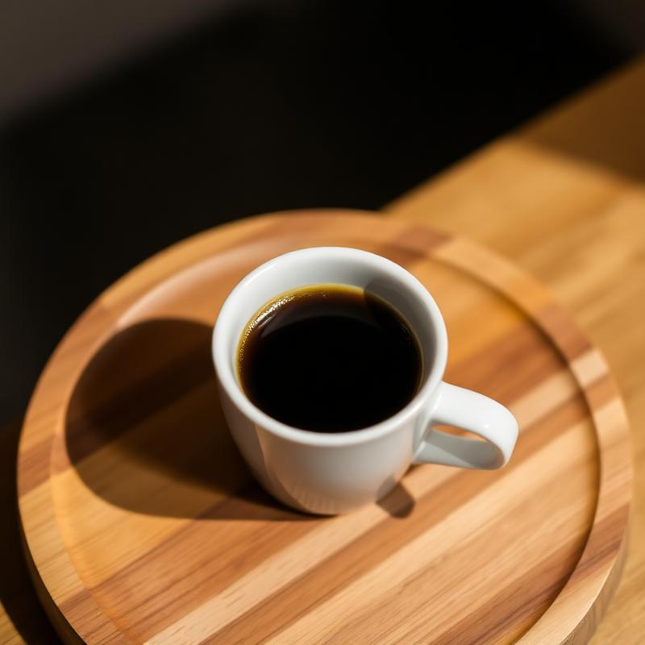
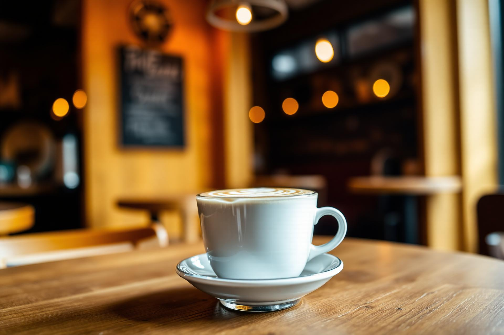
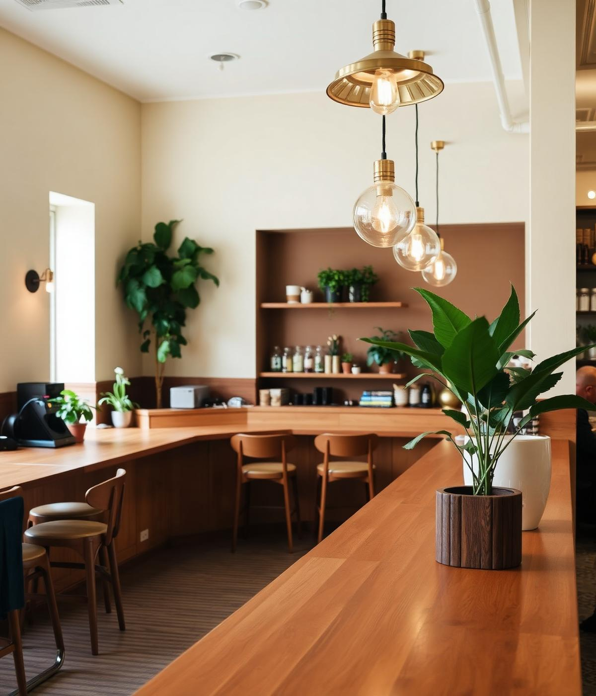
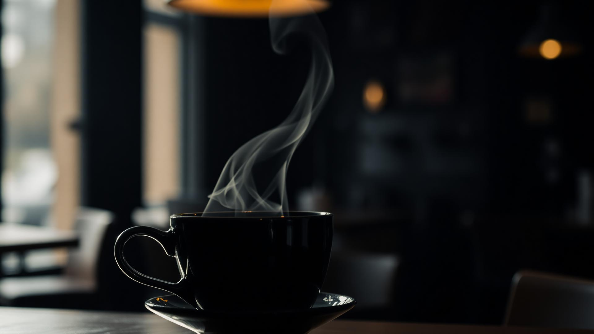

Grão 100% arábica extraído na hora, corpo intenso e crema aveludada. Puro ritual em uma xícara pequena.

Descubra cafés especiais, doces artesanais e momentos inesquecíveis em um ambiente pensado para acolher.
ExplorarA Flor de Sal nasceu para oferecer muito mais do que café. Cada detalhe foi pensado para proporcionar uma experiência acolhedora, onde sabores, aromas e boas conversas se encontram.
Inspirada na delicadeza dos cafés especiais e na gastronomia artesanal, a cafeteria conquistou seu espaço como um dos lugares mais queridos de Cametá.

Selecionados e preparados com carinho.
Produção própria e ingredientes selecionados.
Perfeito para encontros, estudos e trabalho.
Cada cliente é recebido de forma especial.
Cafés, sobremesas, ambiente e momentos capturados no dia a dia da Flor de Sal.
“Um lugar que abraça. O café é impecável e o atendimento me fez voltar no dia seguinte.”
Acompanhe nossas novidades, cafés especiais e momentos cheios de afeto. Estamos sempre compartilhando um pedaço da nossa rotina.
Ver InstagramSim. Selecionamos grãos especiais e preparamos com métodos que valorizam aroma, corpo e doçura natural.
Todos os nossos doces são produzidos artesanalmente, com ingredientes selecionados e receitas próprias.
Sim, aceitamos encomendas de doces e bolos. Combine detalhes e prazos pelo nosso Instagram.
Aceitamos dinheiro, cartões de débito e crédito, além de Pix.
